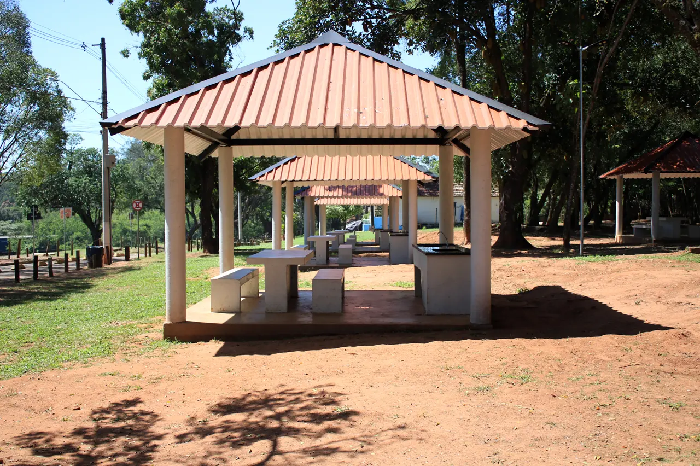
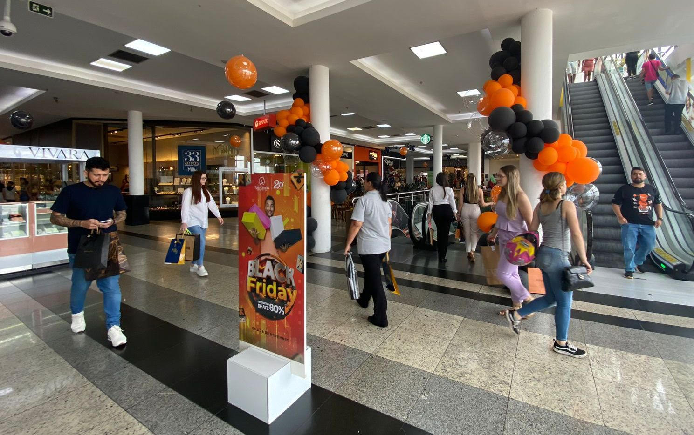

Pontos Turisticos
Horto de Limeira
O Horto Florestal de Limeira, localizado no estado de São Paulo, é um dos principais pontos de interesse ambiental e histórico da cidade. Criado originalmente para atuar como uma reserva florestal e espaço de preservação, o horto abriga uma rica biodiversidade de fauna e flora, sendo um refúgio ecológico em meio à urbanização crescente. Além de sua importância ambiental, o espaço é também um local de lazer e aprendizado, oferecendo trilhas, áreas para piqueniques e projetos educativos voltados à conscientização ambiental. Com uma história que remonta às políticas de conservação do início do século XX, o Horto Florestal é hoje um símbolo do compromisso de Limeira com a sustentabilidade e a qualidade de vida de seus moradores. Abaixo está a Visão do google Maps sobre o Horto de Limeira
Shopping Patio
O Shopping Pátio Limeira é um dos principais centros de compras e lazer da cidade de Limeira, localizado no interior de São Paulo. Inaugurado para atender às demandas crescentes da região, o shopping oferece uma ampla variedade de lojas, desde grandes marcas nacionais até estabelecimentos locais, além de uma diversificada praça de alimentação que atrai visitantes de todas as idades. Com um ambiente moderno e confortável, o espaço também conta com opções de entretenimento, como cinemas e eventos temáticos, tornando-se um ponto de encontro popular para famílias e amigos. O Shopping Pátio Limeira desempenha um papel significativo na economia local, sendo um dos principais polos comerciais da cidade.
